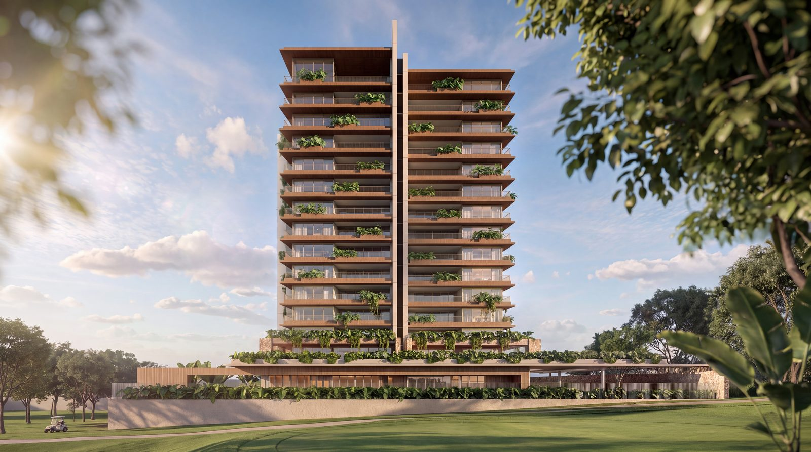

Seleção Prime · Vila do Golf
Por que o Birdie redefine o significado de morar bem na Vila do Golf
Birdie · Ascen · Vila do Golf, Ribeirão Preto

A Vila do Golf em Ribeirão Preto sempre foi sinônimo de excelência e conforto. O lançamento do Birdie eleva essa percepção a um novo patamar. Este projeto não é apenas uma torre residencial: é uma integração respeitosa com a Mata Santa Teresa e a tranquilidade do campo de golfe.
Como consultor, avalio que o grande diferencial do Birdie é a união de grandes nomes do design. A Perkins&Will trouxe uma arquitetura contemporânea impecável, que favorece a ventilação cruzada. Mônica Costa desenhou um paisagismo que abraça o terreno, e Cacau Ribeiro garantiu interiores que transmitem aconchego imediato.
As unidades de 270 metros quadrados foram desenhadas para o convívio, sem abrir mão da individualidade das quatro suítes. Elevador exclusivo e apenas 42 unidades em todo o projeto garantem o silêncio e o espaço que um patrimônio sólido exige.
Visão da visita
O que muda na rotina
Quando você chega ao entorno, o contraste fica claro: o campo do Ipê e a mata não são área verde de marketing. São o horizonte do dia a dia. Na planta, o fluxo favorece a família reunida e a privacidade de cada suíte. Na prática: menos gestão de casa grande, mais tempo no endereço certo, com o clube como extensão da casa.
Vídeo
Um olhar pelo endereço
Próximo passo
Deseja conhecer os detalhes desta planta?
Entenda como ela se encaixa no seu planejamento patrimonial.
Quero visitar no WhatsAppFlávio Barros · Consultor imobiliário · CRECI 323468